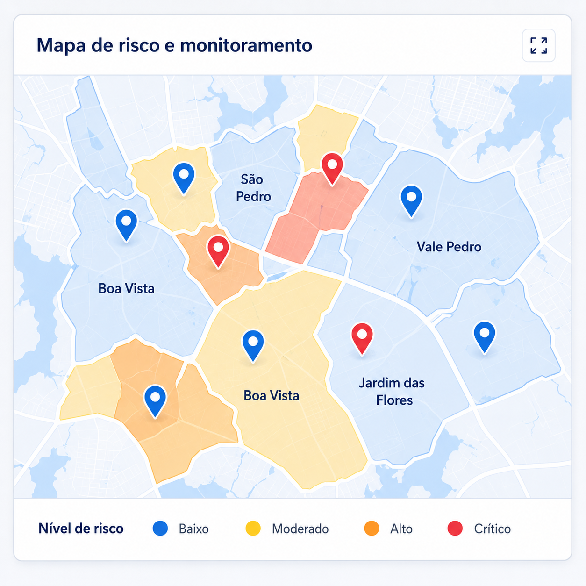

+3 nas últimas 3h
Defesa Civil | Operação simulada
Painel da Defesa Civil
Visão integrada da situação, alertas e respostas recebidas.
Bairros e regiões
58% do total estimado
+8 nas últimas 3h
Requerem atenção
Mapa de risco e monitoramento

Áreas monitoradas
Ver todas| Área | Risco | Alertas | Respostas | Situação |
|---|---|---|---|---|
| Centro | Crítico | Sim | 1.248 | Crítica |
| São Pedro | Alto | Sim | 1.102 | Atenção |
| Vila Norte | Alto | Sim | 987 | Atenção |
| Boa Vista | Moderado | Sim | 742 | Monitorada |
Ocorrências recentes
Novo alertaCentro | Rua das Palmeiras, 532
12 pedidos | Equipes a caminhoSão Pedro | Rua da Encosta, 120
8 pedidos | MonitorandoVila Norte | Av. das Águas, 210
15 pedidos | Equipe enviada